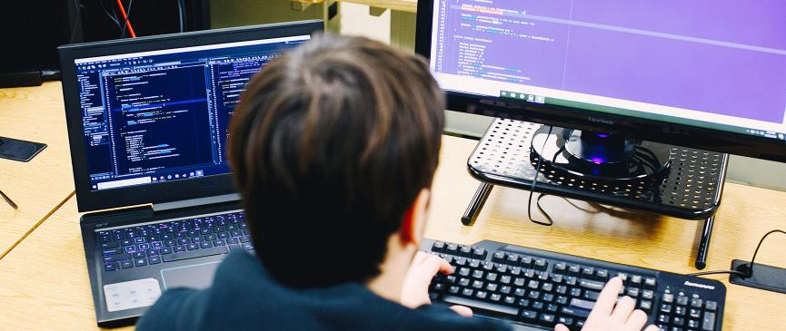

As nearly all aspects of life become more intertwined with technology,
IT Jobs will continue to experience substantial growth during the coming decade.
Description :
Want a career in a computer-related or information technology (IT) field?
Information technology has entered and benefited all sectors of industry.
This field involves creating business applications, performing system analysis.
working in the field of robotics, artificial intelligence.
Qualities Required :
Here are some of the important skills
that you will have to develop in order to be successful in information technology.
Good communication skills
Ability to focus for a long period of time
Team management
Problem solving
Strong analytical skills
Eligibility Criteria :
Graduation in computer science
Post graduation in respective are would be appreciated
Oppurtunities in Information technology :

Engineering graduates are the pillars in current emerging information era.